上周直播的时候，发现Anthropic的skills仓库居然有更新了。
点进去一看，然后居然发现了一个超级刚需的Skills迎来了更新。
就是这个，甚至可以说是整个Skills生态的基石。
Skill-creator。
可以说，现在小龙虾的能力能这么强，有一半的原因都要归功于Skills，而这些Skills能被创造出来，几乎都要归功于这个母Skills，Skill-creator。
我相信，任何一个看过我们过去关于Skills的文章，或者玩过Skills的朋友，都绝对不可能对这个Skill-creator陌生。
简单总结就是，这是Anthropic官方出的Skills生成器。
你可以用嘴描述出你的需求，然后直接用Skill-creator，帮你做成一个Skill。
如果有不了解的，可以去看一下我们过去的这一篇文章：一文带你看懂，火爆全网的Skills到底是个啥。自认为写的还是比较详细的。
这周终于有时间，详细翻了一下这次更新的Skill-creator的文档，然后发现，这次真的可以说，是史诗级更新也不为过，强了太多太多了。
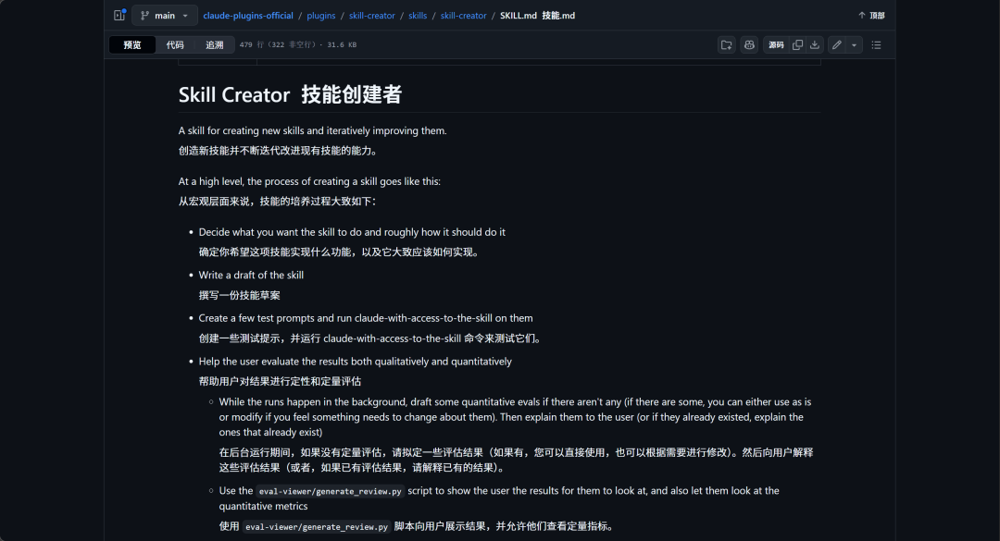
所以我觉得，值得写一篇文章，来给大家聊聊，这次Skill-creator更新的新特性和新功能。
真的，所有的skills，都值得重新优化一遍。
非常简单的说，这次他们一口加了4个全新的能力，分别是：
1. 评估系统，跑完直接告诉你这个skill到底行不行。
2. 基准测试，把通过率、耗时、token用量，全都量化。
3. 多代理并行测试，每个测试在干净的环境里独立跑，支持A/B盲评，结果不互相污染。
4. 描述调优，可以自动帮你改skill描述，该触发的触发，不该触发的就别乱触发。
之前的Skill-creator其实一直有个痛点，就是你生成完的Skills，其实是个黑盒，你完全不知道，这个Skills到底好不好用，它的质量怎么样，它的触发机制合不合理。
用我们现代经常提的工业化体系来说，就是缺少了一个很重要的东西，评估机制。
评估太重要了，一个好的评估，是真的可以引领方向的。
而现在，新版的Skill-creator，直接把整个评估体系，全都补上了。
我极力推荐大家，一定要更新到最新版。
更新方式也究极无敌简单，你直接把这段话，发给你的Agent就行，无论是Claude code、OpenClaw、OpenCode等等等等：
https://github.com/anthropics/skills/tree/main/skills/skill-creator，这个skills更新了，帮我更新到最新版本
对，就这么一句话。
然后你的Agent，就会自己去更新了。
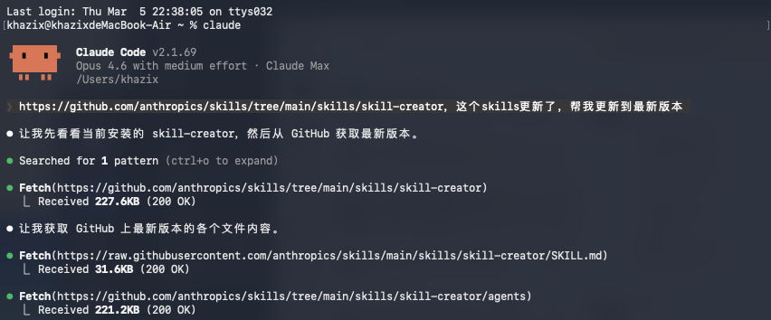
很快，就更新完了。
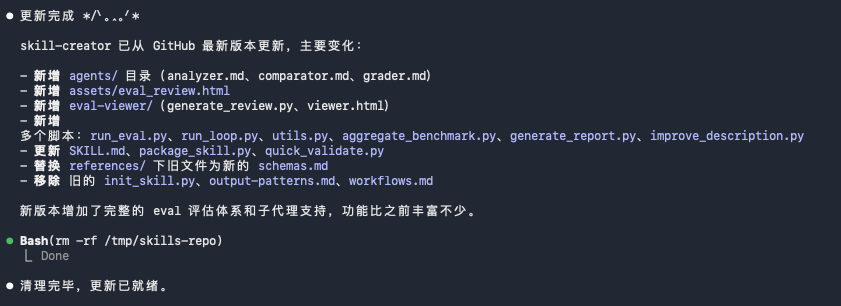
我用一个案例，来给大家演示一下新版Skill-creator的能力。
在之前有一篇文章中，我把Github上的yt-dlp做成了一个Skill，能从YouTube、B站等各种视频网站下载视频。
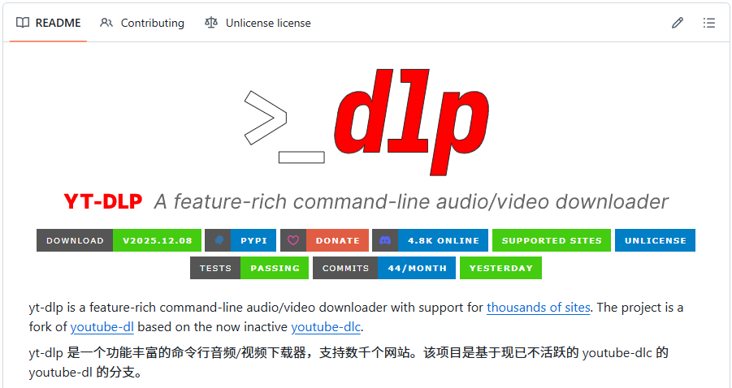
但其实我们后来发现，光能下载视频还不够。
我还希望拿到视频链接之后，能直接生成文字版的讲稿。
而且如果是英文或其他语言的视频，最好能直接给我中英双语的讲稿文档。
所以正好，借着这个机会，我就用skill-creator又搓了一个新skill。
提示词很简单。
我想创建一个skill，我希望能够实现我给了一个视频链接，它能够把文字版的讲稿发给我，如果是别的语言，最好是把原语言版和中文版的讲稿文档给我。
它会先问你几个问题，确认需求细节，然后开始帮你设计整个skill。
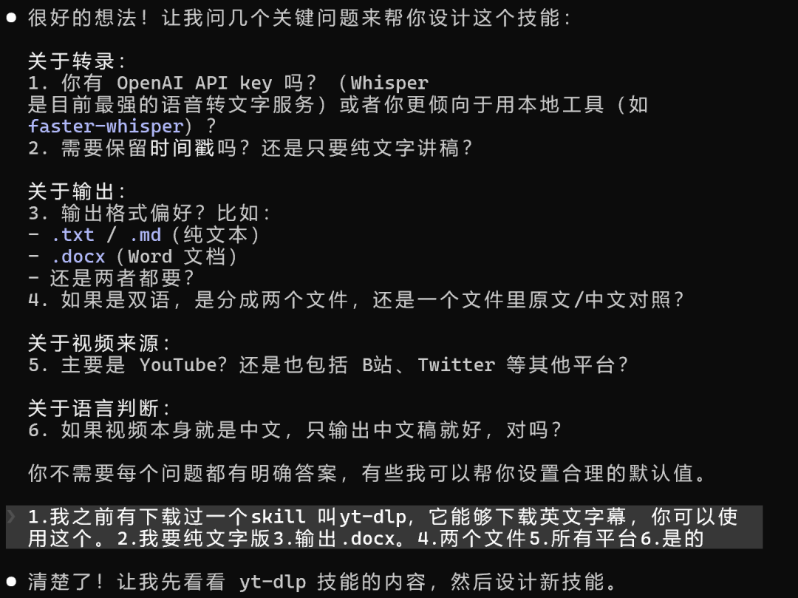
大概3到5分钟，这个Skill就设计完了。
我拿一个OpenClaw创始人的YouTube访谈视频来试一下。
就给了一个YouTube的链接。
五分钟后，中文版的讲稿就出来了。
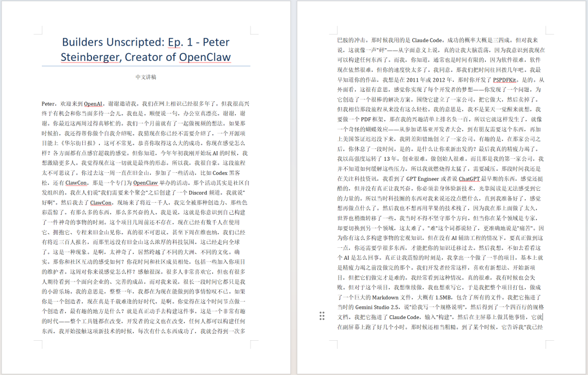
但是，其实有个问题。。。
这一大坨文字堆在一起，字又小又挤。
根本没法看。
这时候你就可以继续对话，让它给你优化，帮你改进这个skill。
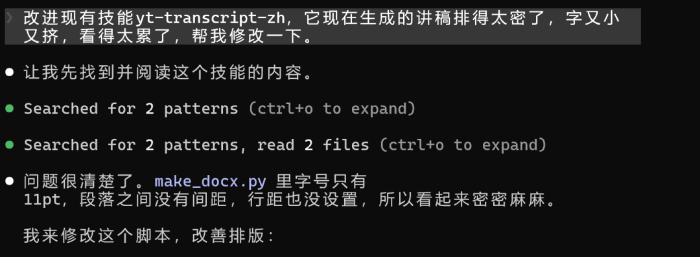
新版的Skill-creator，在改进的能力上，也有一些提升。
改进之后的效果：
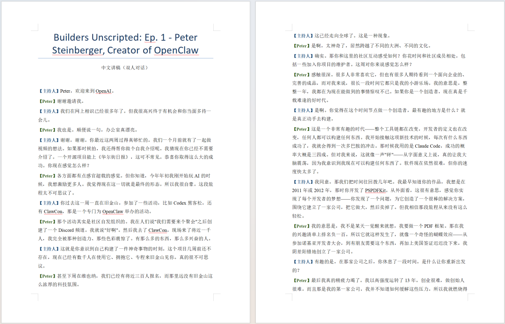
几乎完美。
排版清晰，段落分明，这才像个文档该有的样子。
但这还没完。
但这个时候，一个头疼的问题就来了，我害怕我的skills触发会打架。
因为我现在有两个skill都跟视频链接相关。
一个是yt-dlp，负责下载视频到本地。
一个是刚做的讲稿生成，负责把视频转成文字。
两个skill的触发条件都是给一个视频链接，我害怕他们会打架，就是出现该触发的不触发，不该触发的乱触发。
那就可以使用Skill-creator的评估体系了，让它来帮你，进行优化skill描述。
它受会先读取你当前skill的描述，然后告诉你接下来要做四件事：
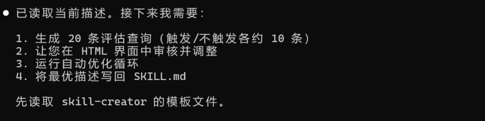
自动生成两组查询，应触发的10条和不应触发的10条。
设计得很有意思。
故意把边界情况都摆进去，逼模型在模糊地带做判断。
然后，直接生成了一个网页，让你确认，特别牛逼。
真的，我用到的时候都惊呆了。
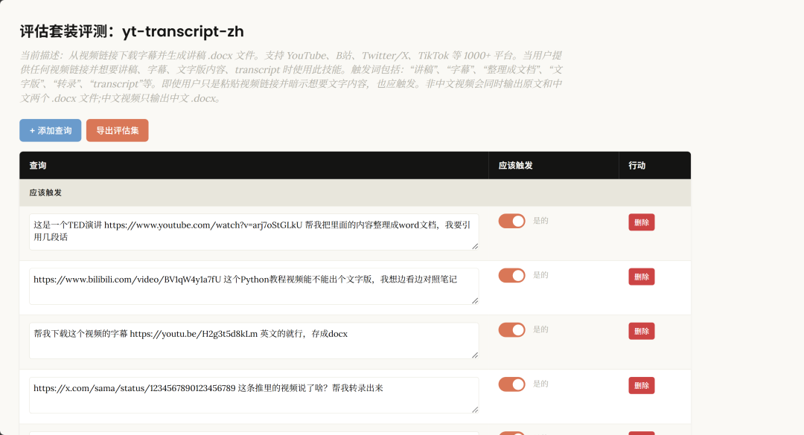
所有查询排在界面里，每一条右边有个开关，标着是否应该触发。
你可以逐条看一遍，觉得哪条判断不对，直接关就行。
打个比方，第三条这种情况，我不想让它再触发了，我就直接让它关掉就行。
然后还有不应该触发的10条，我看了一遍，没啥问题。
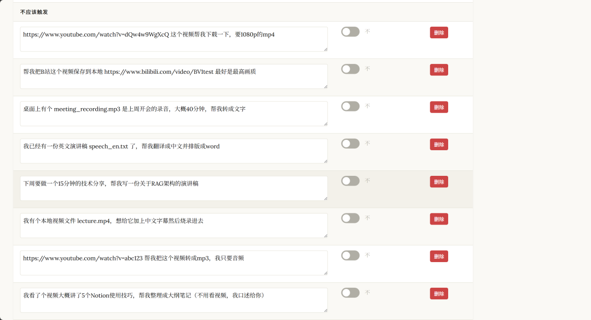
所有的都确认之后，这时候，你点导出评估集，就完事啦。
确认完样本之后，优化循环会在后台启动，最多跑5轮迭代。
每一轮做三件事来帮你进行测试和评估，整个过程大约需要10-20分钟。
它害会定期汇报进度。
跑完之后就是你就能看到一个巨型表格。
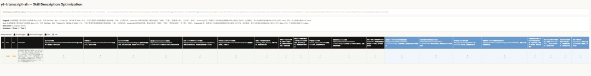
每一列是一个查询样本，每一行是一个迭代版本的描述。
绿色勾对勾表示触发成功，红色叉×表示没触发。
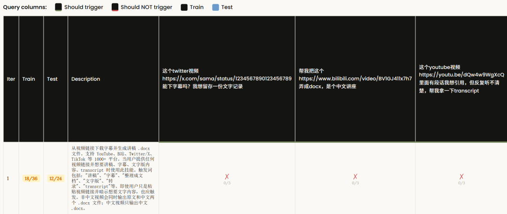
蓝色列是测试集，其余是训练集。
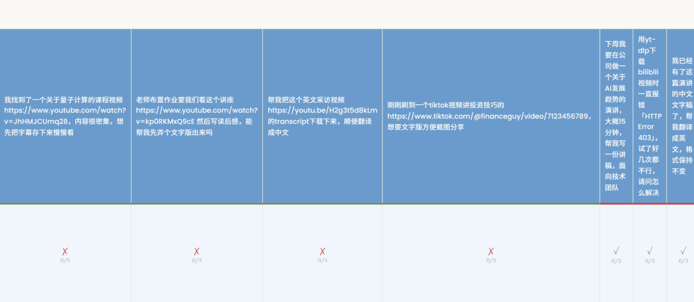
它把样本分成60%训练集和40%测试集，在训练集上迭代优化，最终用测试集上的表现来选，防止过拟合。
跑完之后，最优的描述会自动写回你的SKILL.md，全程不用你动手。
Anthropic官方在自己6个文档类skill上测了一下，5个触发率都有提升。
仅仅就用新版的skill-creator优化了一下，真的很牛逼。
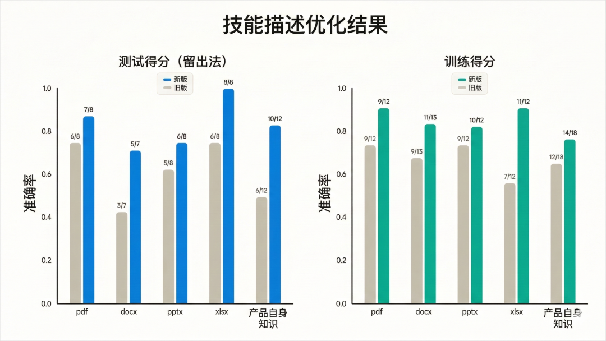
通过这一步，能大大提升你的Skills的触发准确率。
但触发对了，并不等于OK。
所以，你的Skill装上并且能稳定触发之后，到底在实际任务上表现如何，这个能力，也还要评估一下。
我就继续拿这个刚做好的skill来跑一遍，带你大家看看整个过程。
直接对刚刚那个skill进行一下评估。
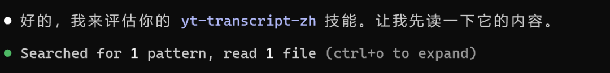
它会先把你的skill文件完整读一遍，搞清楚这个skill的核心流程是什么。
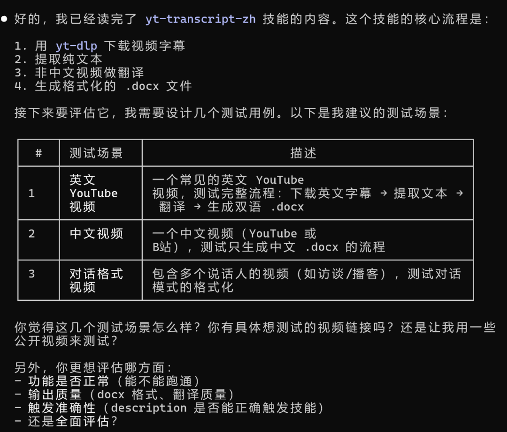
然后它会问你：你更想测哪个方面？
我选了全面评估。
它根据skill的功能，自动设计了三类测试场景，同时设计了量化验收标准。
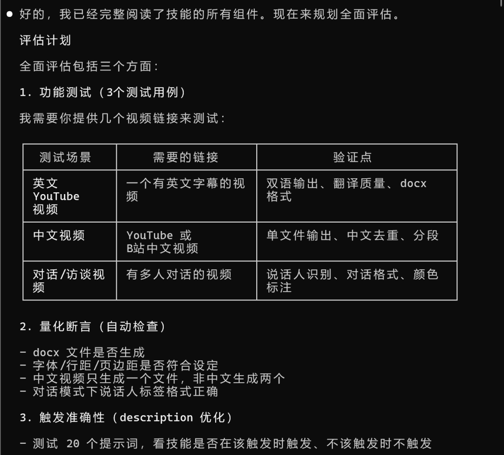
确认方案之后，它一次性启动了4个独立子代理，同时跑。
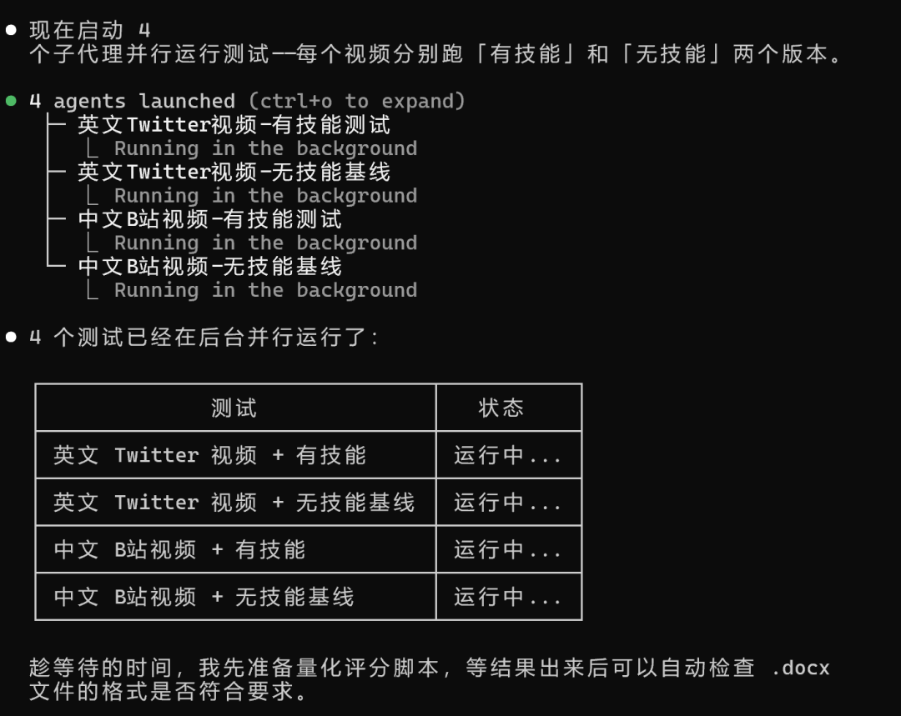
这次4个并行的Agent来进行测试，就很香了。
以前其实你也可以做一些简单的评估，但是，最大的问题，就是会按顺序跑，一个跑完再跑下一个。
但是大家都知道，上下文管理有多重要，前一个任务积累的上下文，会污染后一个的结果。
你以为是skill的功劳，但，其实完全是对话历史帮了忙。
这次的评估，就对味了很多。
每个代理都在完全干净的环境里独立运行，有自己的token 计数和时间指标。
互相之间零交叉。
结果更快，数据更干净。
等待的时候，它也顺手就把量化评分脚本也准备好了。
等测试结果回来之后，就直接自动检查格式是否符合要求，很多小细节全都在里面。
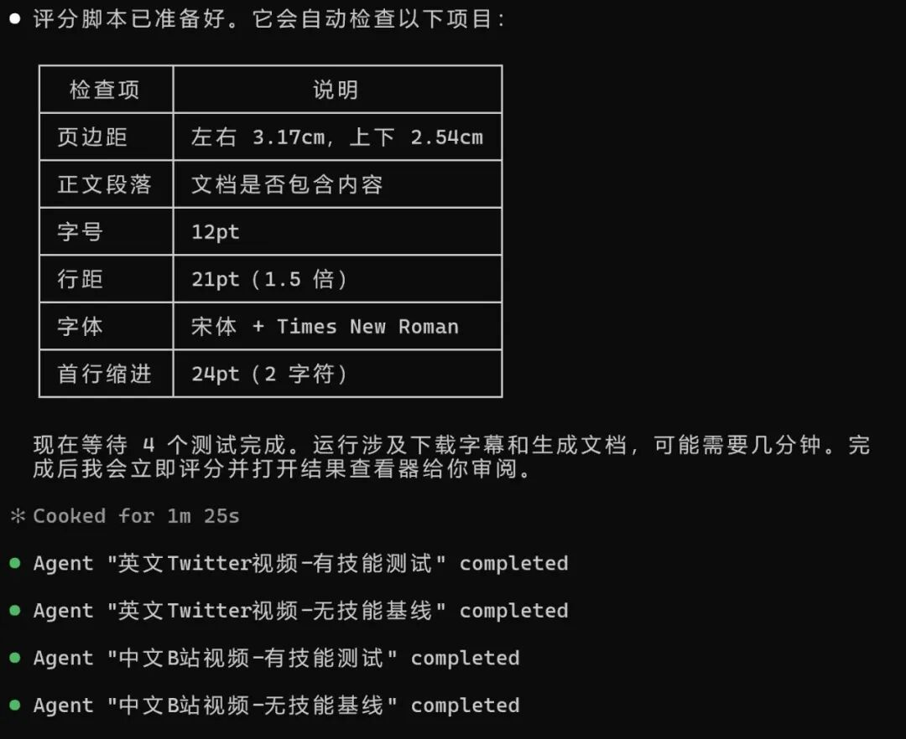
测试跑完，浏览器会里弹出评估查看页面，有两个标签页。
输出标签页，可以直接看每个测试用例的输出。
下面还有一个反馈框，你可以直接标注哪里不对、哪里需要改进。
这些反馈会被存起来，下次改进skill的时候直接用。
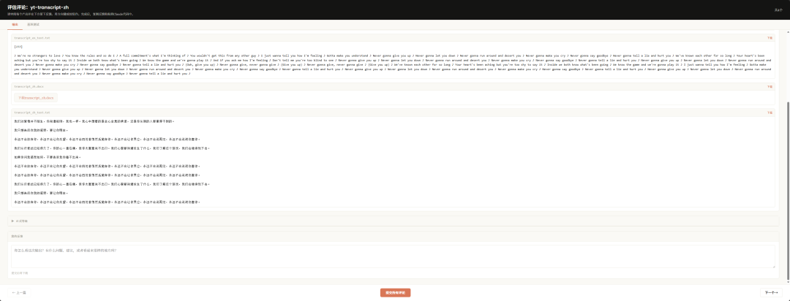
另一个是基准测试标签页，可以看有skill vs 无skill。
通过量化对比，一目了然。
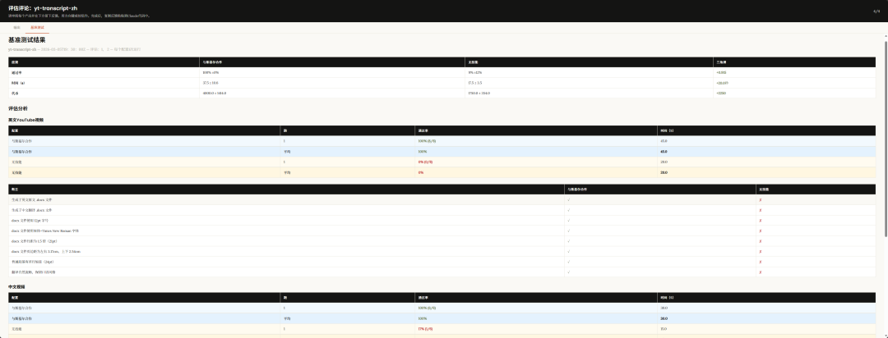
数据这块，也是极度量化。
有skill的通过率100%，无skill基线9%，差值91.5%。
费用上，有skill每次大约4000token，无skill1750token，差了2250。
但这是skill带来的额外消耗，对比产出的结果，值得。
但评估的价值远不止于此。
Anthropic官方也举了个例子。
他们有个PDF skill，之前在处理表格时会出错。
Claude需要把文字精确的放在特定坐标上，但因为没有明确的字段做引导，经常放歪。
这个问题在评估过程中被发现，再进行修复改进定位逻辑后，问题就解决了。
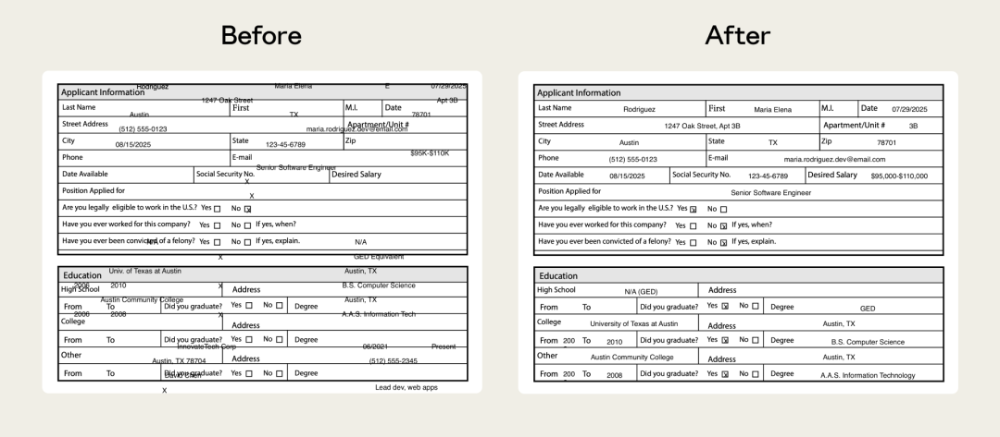
也就是说，找到问题之后不用从头来过。
评估结果会存在本地，下次你用skill-creator改进这个skill的时候，它会把上次标注的问题直接带进去，针对那里改。
改完再跑一遍评估，看有没有提升。
测试、发现、修、再测，这个循环是完整的。
Anthropic把软件开发的一些严谨做法，比如测试、基准、迭代改进等等，这次引入Skills的创作流程。
真的，牛逼太多了。
这绝对对于所有人来说，都是一个史诗级增强。
你要知道，小龙虾为什么那么强，能做那么多的事，其实真不是因为他本身有多牛逼，纯粹是因为，它身上挂的SKills，太多了，那都是一个一个的技能包。
可以说，Skills，就是整个Agent未来大繁荣生态的基石，而我自己，也一直极力的看好和强力推广各种各样的Skills。
所以，我极度建议，大家把Skill-creator更新到最新版，然后把你自己所有的Skills，都进行优化和评估一遍。
当然，你得先分清楚，你写的Skills是哪种。
因为本质上，Skills其实分两种。
第一种是能力提升型。
就是教Claude做它本来不擅长的事。
比如官方的前端设计skill、文档创建skill，里面写了大量技巧，是你光靠Prompt根本拿不到的效果。
我们大多数人自己搓的skill，基本也都是这类。
第二种官方叫编码偏好型。
就是告诉Claude按你的规矩来。
Claude本身每一步都能做，但你的skill把这些步骤按你团队的流程串起来了。
比如一个会议纪要整理skill，按你们公司固定的格式，自动把录音转成带行动项的文档。
或者一个周报生成skill，从各个平台里拉数据，按你要的格式排好。
你可以把这种，理解成一个Workflow，就是一个工作流。
对这两种类型，评估的方向会稍微不太一样。
对于能力提升型，测的是模型更新之后这个skill还有没有存在的必要。
用A/B测试对比，有skill和没skill各跑一次。
结果如果差不多，这个skill就可以退休了。
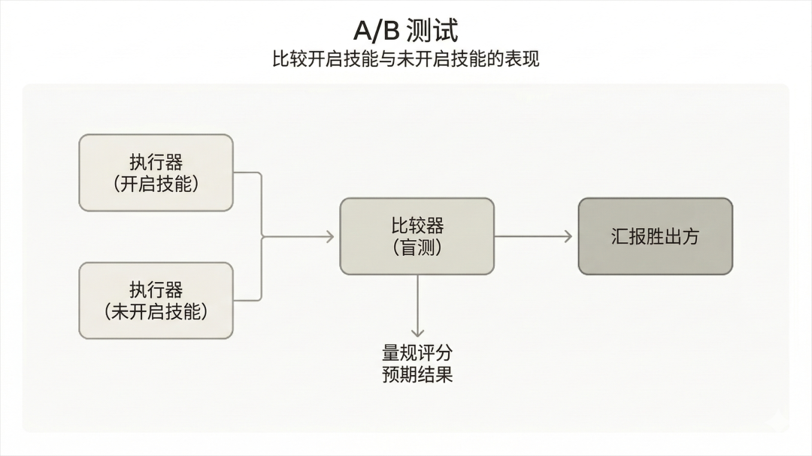
编码偏好型测的是另一件事，它有没有老老实实按你的流程走？
有没有漏步骤？有没有自作主张改了顺序？有没有忘了你特别说过的某个要求？
所以会稍稍有一些区别，这个大家在自己评估的时候，可以注意一下。
回头想想，以前造完一个skill，其实也就是自我感觉良好。
但说实话，全是黑盒，根本不知道该怎么评估。
现在就舒服多了。
评估跑一遍，数据摆出来，好不好用，一眼就见真章。
所有的Skills，真的都值得重新优化和评估一遍。
Skills生态。
感觉又要迎来一波大繁荣了。
以上，既然看到这里了，如果觉得不错，随手点个赞、在看、转发三连吧，如果想第一时间收到推送，也可以给我个星标⭐～谢谢你看我的文章，我们，下次再见。
>/ 作者：卡兹克、可达
>/ 投稿或爆料，请联系邮箱：wzglyay@virxact.com